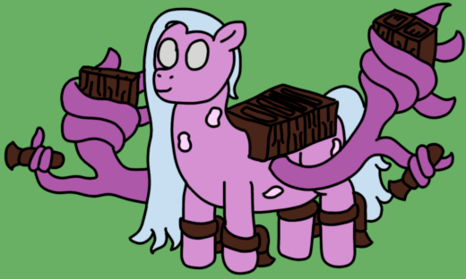

| Commonality | 12.5% (Barycenters; Mechanized Archon Surgery) |
| Durability | 6/10 |
| Strength | Physical: 4/10 Psionic: 4/10 Magical: 2/10 |
| Specials | Aerial self-propulsion Module support (Quad slot, 2x dual slots) |
| Personality | Unburdened and spacey |
Stations are Satellites who undergo a specialized surgery conducted by Mechanized Archons, trading their abilities to efficiently tend to gravitational orbits to instead carry a suite of modules. They retain some flight capability thanks to a net of thrusters installed into their augmented bodies. A group of Stations is called a line.
Satellites - Stations
Stations, at their base level, do not appear majorly changed from their unaugmented siblings, save for a modest height increase (Stations stand at just 6' 8", or 203cm), and of course their lack of any kind of sedimental shell. Their wings, however, are heavily augmented, with the numerous tendrils being largely folded into the main stalks, save for a single branch on each that allows the station to manuever its thrusters. They also have a thruster on each leg like Divisions do, giving them a powerful source of primary propulsion that works best in the gravitational fields of Satellites.
While they lack the ability to effectively shepherd orbits like their unmodified siblings, Stations still display a particular preference for maintaining proximity
While Stations do carry all the genetic code of standard Satellites, there is far more at work under the hood. Namely, there are a number of triggers that seem to incite a need to partake in surgery, effectively meaning that a Station's classification is epigenetically predetermined when they are born. Namely, Stations have weaker abilities to attract, stabilize, and compact sediment around themselves before they undergo surgical modification. As such, while the difference between a freshly-created Satellite and Station is extraordinarily minor, there is a tangible difference between the two from first spawning. How an archon produces the conditions for the extra triggers to be signaled is hitherto unknown information.
Satellites are similar to Heralds in regards to the fact that they're fairly tightly bound to their parent puppet, but are technically capable of functioning on their own, just not quite as intuitively. Satellites are also an extra generation down, for whatever that's worth.
